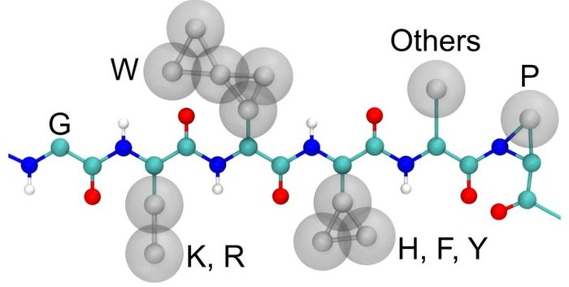
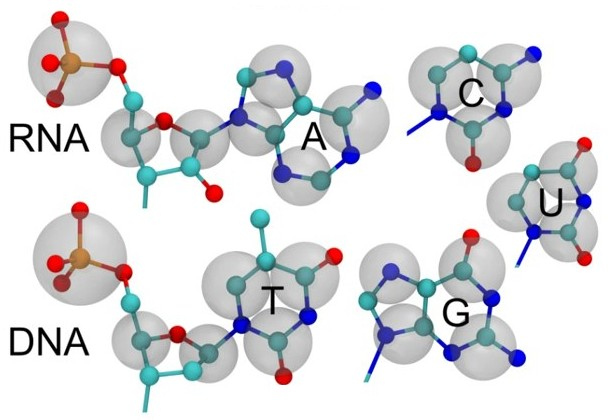
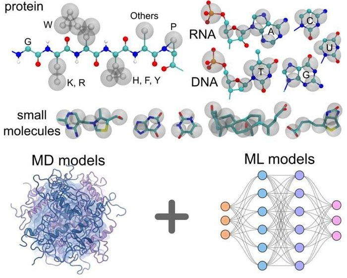

Proteins
HyRes
Hybrid-resolution protein model that captures secondary structure and its coupling to phase separation, with GPU-accelerated simulation of dynamic proteins in complex environments.

Models
All models are open source and integrated in HyresBuilder, which sets up and runs simulations on OpenMM, with tutorials on GitHub.
Hybrid-resolution protein model that captures secondary structure and its coupling to phase separation, with GPU-accelerated simulation of dynamic proteins in complex environments.

Intermediate-resolution models of RNA (iConRNA) and DNA (iConDNA), compatible with HyRes. They capture base pairing and stacking, dynamic nucleic acid structures, and explicit Mg²⁺, revealing the driving forces of nucleic acid condensation and phase separation.

Proteins, nucleic acids, ions, and small molecules in one consistent intermediate-resolution framework, for simulating multicomponent condensates at near-cellular complexity.

Other tools: iConMapper (machine-learning atomistic-to-coarse-grained mapping) · SciKit (analysis and plotting toolkit) · all repositories →